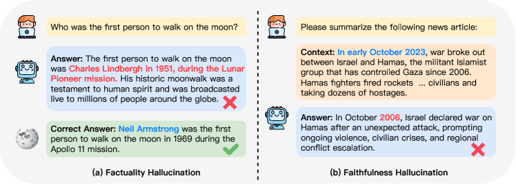

幻觉与事实性
幻觉不是 bug——它是语言模型泛化能力的同一枚硬币的另一面。这一节从概率机制讲到五类成因，从事实性/忠实性区分讲到分层抑制策略，配上线上排查流程和监控闭环，把幻觉从概念到工程治理完整拆开。
幻觉有五种成因，但最终都指向同一个结论：它无法被根除，只能被分层抑制。不同的成因需要不同的治理手段——混为一谈会找错药方。
必须诚实的第一句话：幻觉无法被根除
在讲任何抑制策略之前，先接受一个事实：
模型能把学到的模式
应用到没见过的数据"] Back["反面: 幻觉
模型把模式应用到
不该应用的地方"] end Front --- Back style Front fill:#e8f5e9,stroke:#4a7 style Back fill:#fde8e8,stroke:#c44
这不是悲观——这是工程的前提。接受了这个前提，你才会设计分层防御，而不是指望一个「不幻觉的模型」。接受不了这个前提，你会陷入不断换模型、调 prompt 的循环，却永远达不到「零幻觉」。
根区分：事实性幻觉 vs 忠实性幻觉
所有后续分类的根基。混淆这两种幻觉会导致用错药方——RAG 治不了忠实性幻觉，溯源治不了事实性幻觉。
| 类型 | 定义 | 例子 | 主要抑制手段 |
|---|---|---|---|
| 事实性幻觉 | 输出与外部世界的事实矛盾 | 「莎士比亚的麦克白写于 1603 年」 （实际是 1606 年） | RAG、知识库核实、时效性管理 |
| 忠实性幻觉 | 输出与给定的上下文矛盾 | 给了三篇论文摘要，模型却说了一篇摘要里没有的结论 | 溯源、逐句对齐、更严格的 prompt 约束 |

花两分钟读懂这张图，它会改变你看待模型输出的方式。这张图来自 2023 年那篇幻觉综述，展示的是一个大模型幻觉的典型实例：用户提出一个问题，模型的回答在措辞上完全正常——句子完整、语气笃定、结构像模像样，但内容里有确凿的事实错误（比如把年份、书名或出处说错）。图中通常还会并排标出真实情况，让你一眼看出模型"错得有多自然"。读它的核心是体会一个对比：表达层面的"正常"与事实层面的"错误"可以同时成立。这就是幻觉最难防的地方——它不靠"听起来怪"来暴露自己，恰恰相反，越是自信流畅的措辞越容易掩盖内容错误。
这张图给所有治理工作定了基调：既然幻觉无法靠"读起来对不对"来识别，就必须建立外部证据链——每一句关键陈述都要能对到一份来源上（文档、检索结果、知识库）。这也是本页后面"分层抑制"里把"逐句溯源"列为独立一层的根本原因。顺带说明：综述论文（Huang et al., 2023）对幻觉还做了系统的类型学划分，把幻觉按"与什么矛盾"分成若干类别，本页接下来的"事实性 vs 忠实性"就是这套类型学最核心的一条主线。
五种成因详解
不同类型需要不同的治理手段。理解每种成因的机制，才能对症下药。
→ 事实性幻觉
语料有错,模型学到了"] C2["② 长尾知识稀疏
→ 事实性幻觉
冷门实体训练数据不足"] C3["③ 自回归错误累积
→ 两类都可能
一步错步步错"] C4["④ 对齐的迎合倾向
→ 事实性幻觉
模型宁愿编也不说不知道"] C5["⑤ 上下文冲突
→ 忠实性幻觉
注意力稀释/中间段丢失"] end C1 -->|"RAG"| Fix1["注入外部权威知识"] C2 -->|"RAG"| Fix2["检索补充稀疏知识"] C3 -->|"自洽性检验"| Fix3["多次采样看方差"] C4 -->|"拒答校准"| Fix4["训练模型说'不确定'"] C5 -->|"溯源+注意力管理"| Fix5["逐句标出处+重排上下文"] style C1 fill:#fde8e8,stroke:#c44 style C2 fill:#fde8e8,stroke:#c44 style C3 fill:#fef3c7,stroke:#d97706 style C4 fill:#fde8e8,stroke:#c44 style C5 fill:#e6f1fb,stroke:#185fa5
① 训练数据本身的错误与过时
语料库里的知识有错、有矛盾、有历史版本。模型学到了这些错误，还学得很自信。知识截止日期之前的错误无法靠 prompt 修正——只有 RAG 或微调能解决。
典型场景：模型说「GPT-4 是 2023 年 3 月发布的」——这个信息在训练数据里是对的，但如果实际上 GPT-4.5 已经在 2024 年底发布了，模型的知识就过时了。过时不等于错误——模型说的是训练时的正确答案，但世界变了。
② 长尾知识稀疏
常见实体（纽约、爱因斯坦）在训练数据里出现百万次，但冷门实体可能只有个位数。对于稀疏的知识，模型会从相关分布里「猜」——这不是故意编造，是它没有更好的信号。
典型场景：问模型一个三线城市的小众餐厅地址，模型可能「猜」一个看起来合理的地址——因为它在训练数据里只见过这个餐厅名字一两次，但见过大量「XX 路XX 号」的地址模式，就把模式套上去了。
③ 自回归的错误累积
一步错误可能让后续步骤的分布完全偏掉。更糟的是，模型倾向于把错误的开头圆下去而不是回头修改——因为训练时看到的好文本都是前后一致的，模型学会了「宁可错也得一致」。
'1603年' 这个错误前提
继续生成"] Err --> T7["'是詹姆斯一世时期的作品'"] Err --> T8["'比哈姆雷特早两年'"] style T5 fill:#fde8e8,stroke:#c44 style Err fill:#fef3c7,stroke:#d97706
④ 对齐带来的迎合倾向
RLHF 让模型学会「有帮助的回答得分高」。但「我不知道」通常不被人类标注为「有帮助」——所以模型宁愿编一个也不愿承认不知道。这是对齐的副作用。
这个问题的根在 RLHF 的标注偏好——标注员倾向于给「给了答案」的回答打高分，给「我不知道」打低分。模型学会了这个偏好后，即使不确定也会给出看起来自信的答案。修复方向：在对齐阶段增加「正确拒答」的正样本——让模型学会「不确定时说不确定」也能得高分。
⑤ 上下文冲突型
给了准确的资料，模型却输出了不一致的结论。通常是注意力稀释导致——上下文中间段的信息容易被忽略（lost in the middle），或者模型被 prompt 的其他部分带偏。
高注意力"] --> Mid["中间
低注意力(丢失)"] --> End["结尾
高注意力"] end Start -->|"信息被看到"| OK1["✓"] Mid -->|"信息被忽略"| Lost["✗ 丢失"] End -->|"信息被看到"| OK2["✓"] style Start fill:#e8f5e9,stroke:#4a7 style Mid fill:#fde8e8,stroke:#c44 style End fill:#e8f5e9,stroke:#4a7
分层抑制策略：没有银弹，只有纵深防御
抑制幻觉不是一步到位的——需要从检索到监控的多层防御，每层解决不同成因的问题：
RAG 注入外部权威知识
→ 压住 ①②(事实性)"] L2["生成层
逐句溯源 + 严格prompt约束
→ 压住 ⑤(忠实性)"] L3["后处理层
自洽性检验(多次采样)
→ 压住 ③(错误累积)"] L4["对齐层
拒答校准(训练'说不知道')
→ 压住 ④(迎合倾向)"] L5["监控层
线上幻觉率采样+用户反馈
→ 发现问题(不预防)"] end L1 --> L2 --> L3 --> L4 L4 -.->|"持续反馈"| L5 L5 -.->|"数据回流"| L4 style L1 fill:#e6f1fb,stroke:#185fa5 style L2 fill:#eaf3de,stroke:#639922 style L3 fill:#fef3c7,stroke:#d97706 style L4 fill:#faeeda,stroke:#ba7517 style L5 fill:#f5f5f5,stroke:#999
| 层次 | 手段 | 解决什么 | 成本 |
|---|---|---|---|
| 检索 | RAG：在生成前注入外部权威知识 | ①训练数据错误 / ②长尾稀疏 | 检索延迟、chunk 管理 |
| 生成 | 逐句溯源：每句话标出处 | ⑤上下文冲突、②长尾拼接错误 | token 消耗增加约 30-50% |
| 后处理 | 自洽性检验：多次采样看答案是否收敛 | ③自回归错误（采样方差大≈不可信） | 推理成本 × N |
| 对齐 | 拒答校准：在 safety-alignment 中让模型学会在不确定时表达 | ④迎合倾向 | 对齐阶段的一次性成本 |
| 监控 | 线上幻觉率采样、用户反馈回流、回归评测 | 全部（发现而非预防） | 持续运维成本 |
自洽性检验：多次采样看方差
这是一种简单但有效的后处理方法：对同一个问题用不同的随机种子采样 N 次，看答案是否一致。如果 N 次答案高度一致——模型很确定；如果答案发散——模型自己也不确定，这个回答大概率不可信。
展开：自洽性检验的代码实现
import collections
def self_consistency_check(question, llm_call, n=5, temperature=0.7):
"""对同一问题多次采样,检查答案一致性"""
answers = []
for i in range(n):
# 每次用不同的随机种子
resp = llm_call(question, temperature=temperature, seed=i)
answers.append(resp.strip())
# 统计答案分布
counter = collections.Counter(answers)
most_common, count = counter.most_common(1)[0]
consistency = count / n
if consistency >= 0.8:
return {
"answer": most_common,
"confidence": "high",
"consistency": f"{consistency:.0%}",
"all_answers": dict(counter)
}
elif consistency >= 0.6:
return {
"answer": most_common,
"confidence": "medium",
"consistency": f"{consistency:.0%}",
"warning": "部分采样给出了不同答案",
"all_answers": dict(counter)
}
else:
return {
"answer": None,
"confidence": "low",
"consistency": f"{consistency:.0%}",
"warning": "答案高度发散,模型不确定",
"all_answers": dict(counter)
}注意：自洽性检验的 temperature 不能太低——temperature=0 时每次采样结果相同，检验就没意义了。通常用 0.7-1.0 来获得足够的采样多样性。
线上排查流程：幻觉率上升时怎么办
线上幻觉率上升时，不要急着换模型——先排查是哪一层的问题：
召回率@K 是否正常?"} Step1 -->|"召回率下降"| Fix1["→ 检索问题
优化搜索/索引
不需要动模型"] Step1 -->|"召回率正常"| Step2{"Step 2: 检索内容
是否包含正确信息?"} Step2 -->|"检索内容无正确信息"| Fix2["→ 知识库问题
补充知识/更新文档"] Step2 -->|"检索内容有正确信息"| Step3{"Step 3: 模型是否
用了检索内容?"} Step3 -->|"模型忽略检索内容"| Fix3["→ 忠实性幻觉
加强prompt约束/溯源/重排"] Step3 -->|"模型用了但输出仍错"| Fix4["→ 生成侧幻觉
自洽性检验/换模型/微调"] style Alert fill:#fde8e8,stroke:#c44 style Fix1 fill:#e6f1fb,stroke:#185fa5 style Fix2 fill:#e6f1fb,stroke:#185fa5 style Fix3 fill:#eaf3de,stroke:#639922 style Fix4 fill:#fef3c7,stroke:#d97706
监控闭环：从发现到修复
幻觉的另一种切分：事实性 / 逻辑性 / 指令性
按"与什么矛盾"切分是根，工程上还需要更细的判别口径，才能为每条线上反馈打标签。实践中常用三分法：事实性、逻辑性、指令性。三者表现不同、成因不同、修复路径也不同。
| 子类型 | 判别标准 | 典型例子 | 修复路径 |
|---|---|---|---|
| 事实性幻觉 | 与外部世界的事实不符，可用权威来源证伪 | 「法国首都是柏林」 | RAG、知识库核实、时效管理 |
| 逻辑性幻觉 | 内部推理链条断裂，前后矛盾或违反基本逻辑 | 「3×5=12，因为 3+5=8」 | 自洽性检验、CoT 校验、推理微调 |
| 指令性幻觉 | 未执行用户明确指令，或执行了未被要求的内容 | 要求只输出 JSON，却输出了解释文字 | prompt 约束、结构化输出、格式校验 |
三分法和"事实性 vs 忠实性"并不冲突，而是互补：前者回答"哪类错"，后者回答"跟谁比错"。一条回答可以同时是事实性幻觉（编了年份）也是忠实性幻觉（与文档矛盾）。打标签时建议两个维度都记录，否则后续归因会丢失信息。
判别实操上，事实性用检索工具交叉验证最可靠——拿生成文本里的实体和日期去搜索，看有没有权威来源背书；逻辑性靠人工或更强模型复核推导链条，重点是看每一步是否站得住，而不是看结论对不对；指令性直接对照用户原话，看输出是否满足每条约束。有了这个判别表，线上幻觉案例库的标签质量会明显提升。
幻觉率怎么量化：从口径到指标
治理幻觉的第一步是把"幻觉"变成可测量的数。但"幻觉率"的定义五花八门，不统一口径，两个团队的数字没法对比。常见口径有三种，按严格程度递增。
句子级幻觉率（strict）：把回答拆成句子，逐句判断是否被检索文档支持，不支持的比例即幻觉率。优点是可自动化、可逐句定位；缺点是重查准轻查全，句子未被支持不代表一定是幻觉，可能是常识推断。
回答级幻觉率（loose）：整条回答只要有一处关键事实错误就算幻觉，幻觉率 = 含幻觉的回答数 ÷ 总回答数。优点是贴近用户感受——用户不关心 30% 的句子错了，只关心这次回答能不能信；缺点是粒度粗，一条回答错了三处和错一处都记为 1。
关键事实正确率：预先定义回答里的关键事实点（entities、数值、时间），逐点核对。这是最细的口径，也是 RAG 评测里的主流，但需要为每条回答额外标注"哪些是关键事实"，成本最高。
展开：同一批数据，三个口径算出 8%、25%、10% 三种"幻觉率"——手算一遍
设你抽了 100 条线上回答，共 500 句话，其中 40 句话与检索文档不符，且这 40 句分布在 25 条回答里（15 条回答各错 1 句，10 条回答各错 2~3 句）。同一批数据，换口径算：
句子级幻觉率：40 句错 ÷ 500 句 = 8%。数字最小，因为大量正确句子稀释了错误。
回答级幻觉率：25 条含错 ÷ 100 条 = 25%。数字最大，因为一条回答只要有一处关键错误就记为一次"不可信"——这正是用户视角：不关心 30% 的句子错了，只关心这次回答能不能信。
关键事实正确率：设每条回答平均 3 个关键事实点（实体/数值/时间），共 300 点，逐点核对错 30 点，正确率 90%，对应的幻觉率（1−正确率）= 10%。最细，也最贴近"哪些事实说错了"。
同一个模型、同一批数据，三个口径算出 8%、25%、10% 三个数——这就是为什么"我们幻觉率只有 2%"和"他们幻觉率 15%"的对比常常毫无意义，先把口径对齐再谈数字。报告幻觉率务必注明口径，最好三个口径一起报，同时附上拒答率，防止模型用"消极正确"刷分。
指标算出来后，还要配一条重要原则：幻觉率必须和召回/覆盖率一起看。一个模型为了不说错，把所有回答都回成"抱歉我不确定"，幻觉率降到接近 0，但产品完全没法用。监控幻觉率的同时要监控拒答率、无帮助率，防止模型用"消极正确"刷指标。三个数放在一起，才能判断治理方向是"少说"还是"说对"。具体到团队落地时，建议每周固定抽 100-200 条真实用户对话打一次标签，人工打不动就用 LLM-as-Judge 初筛、人工抽检复核，把幻觉率的变化当成和周报里的调用量一样的常规指标来追踪。
温度与幻觉：一个被低估的旋钮
生成参数里最容易被忽略的幻觉杠杆是温度（temperature）。直觉上，温度越高采样越随机，越容易胡说——这个直觉基本正确，但机制比"随机"更微妙：高温放大了低概率 token 的激活，而低概率 token 往往来自模型"不确定"的区域。模型越不确定，高温下越容易滑向任意一个看似合理的续写，这就是幻觉的温床。
一个值得做的小实验：同一批事实性提问，分别在 temperature=0、0.7、1.2 下各测 200 条，统计幻觉率。很多团队的实测曲线是：0 时幻觉率最低但回答单调，0.7 时略升但仍有可接受区间，超过 1.0 后幻觉率明显上翘。如果你的产品对事实性要求高（客服、医疗、法律），把 temperature 压到 0.3 以下，比换任何 prompt 都立竿见影；反之，创意写作场景可以放宽到 1.0+，因为那里"幻觉"反而是用户要的多样性。代价是低温会让回答偏保守、重复度高，需要结合具体场景平衡。
幻觉检测：怎么知道模型在编
抑制幻觉的前提是能检测到它。常见的检测方法各有优劣：
| 方法 | 原理 | 优点 | 缺点 |
|---|---|---|---|
| 外部知识核实 | 把模型输出与权威知识库对比 | 最准确 | 只适用于有知识库的领域；成本高 |
| 自洽性检验 | 多次采样看方差 | 无需外部知识；简单 | 推理成本 × N；对「一致但错误」的幻觉无效 |
| LLM-as-Judge | 用另一个 LLM 判断输出是否有幻觉 | 灵活；可批量 | 评判模型自身也可能幻觉；有偏差 |
| 溯源对齐 | 每句话标出处，检查出处是否支持该陈述 | 精确到句子 | 需要检索基础设施；token 成本高 |
| 用户反馈 | 用户点踩/纠错 | 真实场景；免费 | 覆盖率低；反馈延迟；有偏差（只有不满的人才反馈） |
一个完整例子：把治理流程串起来
把这一页的知识放进一个具体场景里串一遍。假设你做了一个企业知识库问答产品，最近用户反馈说「回答里有编造的信息」，幻觉率从 3% 涨到 6%。按前面的框架，排查顺序应该是这样的。
第一步，先确认数据口径。6% 是哪个指标？如果是句子级幻觉率，用「关键事实正确率」复测一遍，看看是不是文档更新后检索命中率下降导致的——很多「幻觉投诉」其实是检索没召回，模型只能靠记忆硬答。第二步，抽 50 条幻觉案例进案例库，用「事实性 / 逻辑性 / 指令性」三分法打标签，看分布。如果 60% 是事实性，方向是补知识库；如果 40% 是指令性（比如用户要求「只给三个要点」，模型给了五个），方向是 prompt 约束；如果大量是逻辑性，方向是加自洽性检验。
第三步，对照五层防御看哪一层失守了。检索层召回率是否下降？生成层有没有做逐句溯源？后处理层有没有跑自洽性检验？如果这些防御本来就没搭，那 6% 的幻觉率是「裸奔」的正常结果，先补防御而不是先调模型。第四步，修复后用同一口径回归——把修复前的 50 条案例重新跑一遍，看幻觉率是否回落，同时盯住拒答率和无帮助率，防止模型用「我不确定」消极刷分。
这个过程里最容易被忽略的教训是：幻觉治理是一场持续对抗，不是一次发布。知识库会更新、用户提问分布会漂移、新文档可能自带错误，幻觉率必然反复。所以案例库、监控、回归评测这套闭环要长期运行，每次迭代模型或知识库都跑一遍回归。这也是为什么这一页反复强调「监控层」——它是唯一能持续发现问题的环节，其他四层都只能治标。
最后提醒一点组织层面的建议：幻觉治理需要一个明确的 owner。检索由搜索团队管、prompt 由应用团队管、模型由算法团队管，如果没人对「最终幻觉率」这个指标负责，每次出了事就是三个团队互相甩锅——「检索没问题」「prompt 没问题」「模型没问题」，但用户看到的就是答案错了。指定一个幻觉率指标的负责人，让他协调三层修复，是这个治理闭环能真正运转起来的前提。工具层面，幻觉检测已有开源框架和不少厂商的评测服务，团队可以先用现成工具搭一版监控，再根据自己领域的特点逐步定制——不必从零造轮子。
要点速查
- 诚实结论：幻觉无法被根除——它是泛化能力的副作用。能做的只是分层抑制。
- 根区分：事实性幻觉（与外部世界矛盾）vs 忠实性幻觉（与给定上下文矛盾）。RAG 压前者，溯源压后者。
- 五种成因：训练数据错误/过时、长尾知识稀疏、自回归错误累积、对齐的迎合倾向、上下文冲突。
- 五层抑制：检索（RAG）→ 生成（溯源）→ 后处理（自洽性检验）→ 对齐（拒答校准）→ 监控（线上采样+回流）。
- RAG 本身会引入新幻觉：检索结果的错误拼接、chunk 间的信息扭曲。
- 自洽性：多次采样看答案是否一致——方差大说明模型自己也不确定。对「一致但错误」的幻觉无效。
- 线上排查决策树：先查检索召回率 → 再查检索内容 → 再查模型是否用了检索 → 最后才考虑生成侧问题。
- 持续监控：采样 → 检测 → 分类 → 修复 → 部署，形成闭环。见 可观测性。
参考文献与延伸阅读
- Survey of Hallucination in Natural Language Generation (Ji et al., 2023) — 幻觉领域的综述论文，系统梳理了事实性/忠实性幻觉的定义、成因和评估方法，是理解幻觉分类框架的最佳起点 · arXiv:2202.03629
- Self-Consistency Improves Chain of Thought Reasoning in Language Models (Wang et al., 2022) — 自洽性检验的原始论文，证明了多次采样取多数投票能显著提升推理准确率 · arXiv:2203.11171
- RAG 原始论文 (Lewis et al., 2020) — 检索增强生成的奠基论文，虽然主要讲架构，但其中关于幻觉抑制的实验数据至今仍有参考价值 · arXiv:2005.11401
- Cognitive Mirage: A Review of Hallucinations in Large Language Models (2023) — 聚焦 LLM 幻觉成因与检测的最新综述 · arXiv:2311.05232